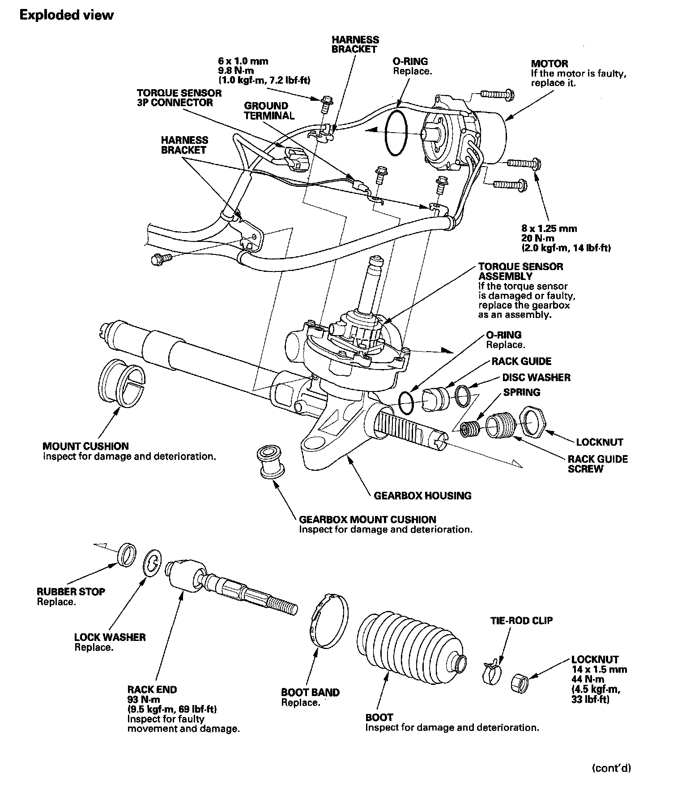
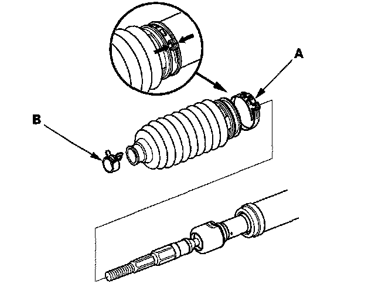
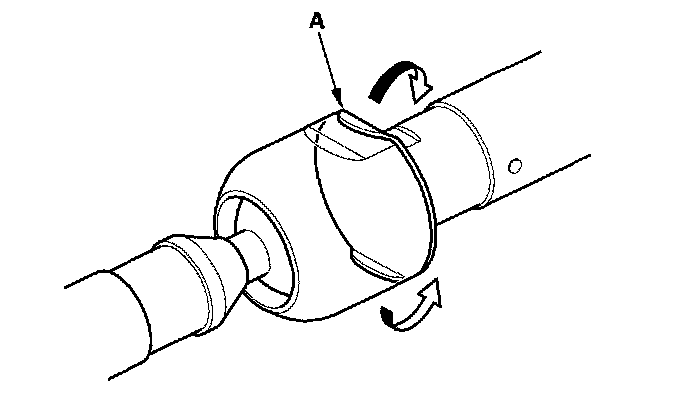
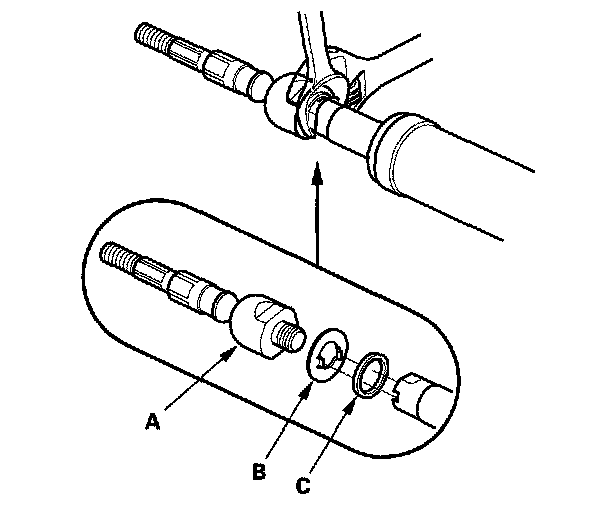
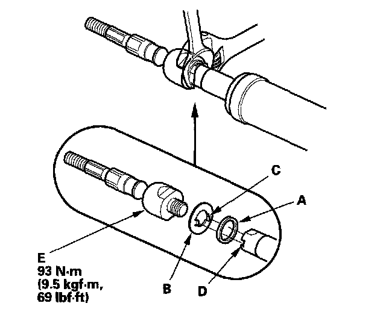
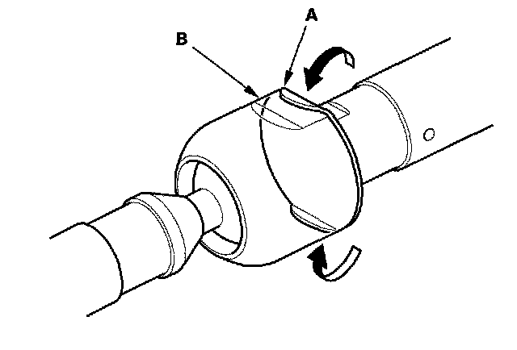
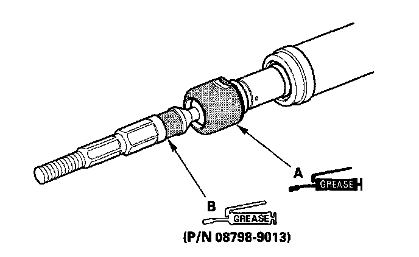
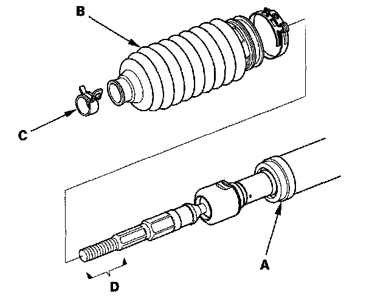
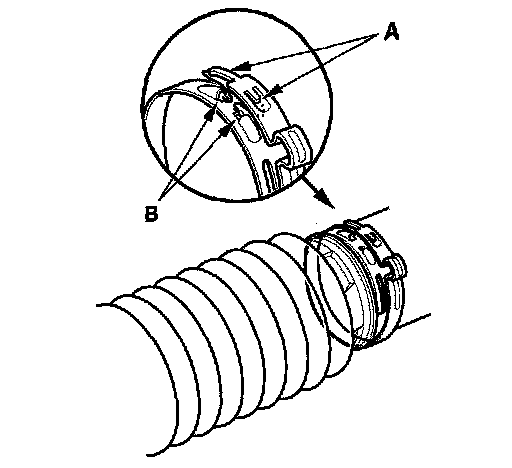
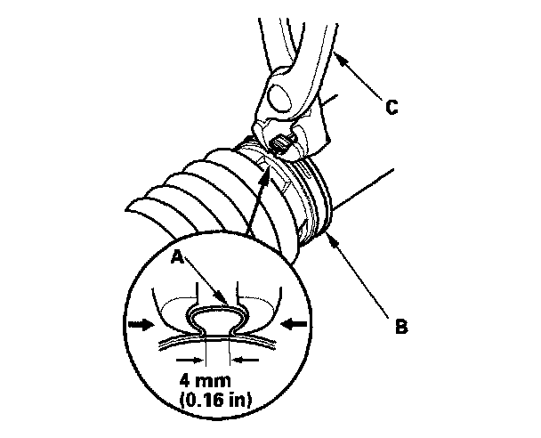

Tie Rod: Service and Repair
Rack End Removal and InstallationRack End:

Removal
NOTE: Do not allow dust, dirt, or other foreign materials to enter the steering gearbox.
1. Remove the boot bands (A) and discard them. Remove the tie-rod clips (B), and pull the boots away from the ends of the steering gearbox.

2. Unbend the lock washer (A).

3. Unscrew both rack ends (A) with a wrench. Be careful not to damage the rack shaft surface with the wrench. Remove the lock washer (B) and rubber stop (C) and discard them.
NOTE: Hold the flat surfaces of the rack shaft on the pinion shaft side with another wrench.

Installation
1. Install the new rubber stop (A) and lock washer (B) on the rack shaft. Align the lock washer tabs (C) with the slots (D) in the rack shaft. Install the rack end (E) while holding the lock washer in place. Repeat this step for the other side of the rack shaft.

2. Tighten both rack ends. Be careful not to damage the rack shaft surface with the wrench.
3. Bend the lock washer (A) back against the flat spots (B) on the rack end ball joint housing.

4. Apply multipurpose grease to the circumference of the rack end joint housing (A) and lock washer.

5. Apply a light coat of silicone grease (P/N 08798-9013) to the boot fitting grooves (B) on the rack ends.
6. Center the steering rack within its stroke.
7. Clean off any grease or contamination from the boot installation grooves (A) on the gearbox housing. Install the boots (B) on the rack ends with the tie-rod clips (C), and fit the boot end in the installation grooves in the housing properly.

8. After installing the boots, wipe the grease off the thread section (D) of the rack end.
9. Install the new boot bands by aligning the tabs (A) with the holes (B) of the band.

10. Close the ear portion (A) of the band (B) with commercially available pincers, Oetiker 1098 or equivalent (C).

11. Slide the rack shaft right and left to be certain that the boots are not deformed or twisted.